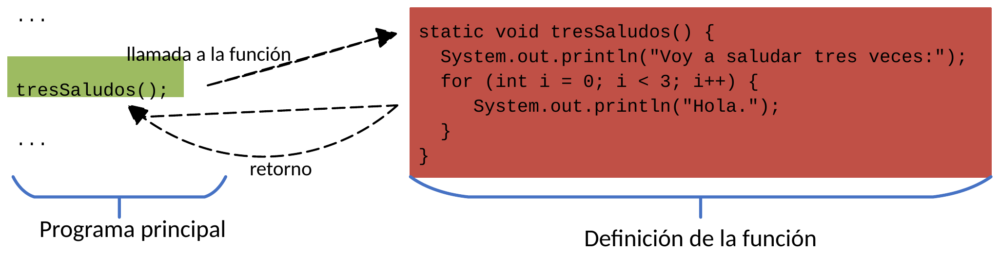

Conceptes bàsics¶
La solució quan necessitem la mateixa funcionalitat en diferents llocs del nostre codi consisteix a etiquetar amb un nom un fragment d'instruccions i substituir en el programa aquest fragment, allà on es necessite, pel nom que li hem assignat.
Gràcies a l'ús de fitxers compactes (compact files) en les versions modernes de Java, podem escriure directament les nostres funcions juntament amb el mètode void main(), utilitzant el mòdul IO per a una entrada i eixida neta i directa.
1. Motivació: Evitar la duplicitat¶
Imaginem un programa on necessitem saludar tres vegades en diferents punts de l'execució:
void main() {
// ... codi inicial
// Fragment repetit 1
IO.println("Vaig a saludar tres vegades:");
for (int i = 0; i < 3; i++) {
IO.println("Hola.");
}
// ... més codi
// Fragment repetit 2
IO.println("Vaig a saludar tres vegades:");
for (int i = 0; i < 3; i++) {
IO.println("Hola.");
}
// ... altre codi
// Fragment repetit 3
IO.println("Vaig a saludar tres vegades:");
for (int i = 0; i < 3; i++) {
IO.println("Hola.");
}
// ... resta del codi
}
// Definició de la funció
void tresSaludos() {
IO.println("Vaig a saludar tres vegades:");
for (int i = 0; i < 3; i++) {
IO.println("Hola.");
}
}
void main() {
// ... codi inicial
tresSaludos(); // Primera crida a la funció
// ... més codi
tresSaludos(); // Segona crida a la funció
// ... altre codi
tresSaludos(); // Tercera crida a la funció
// ... resta del codi
}
Amb aquest disseny, si demà volem canviar el text de la salutació o imprimir en majúscules, només caldrà modificar una única línia dins de tresSaludos().
2. Definició i sintaxi d'una funció en Java¶
Una funció és un conjunt d'instruccions agrupades sota un identificador (nom) i amb un objectiu comú, que s'executa quan és invocada.
Dins d'un fitxer compacte, la sintaxi per a definir una funció és:
tipus: Indica el tipus de dada que retornarà la funció (int,double,boolean...). Si la funció només executa accions i no retorna cap valor, s'utilitza la paraula reservadavoid.nomFuncio: És l'identificador de la funció. Per convenció s'utilitza la nomenclatura camelCase (comença en minúscula i cada paraula composta comença en majúscula). Exemples:tresSaludos(),calculaArrelQuadrada(),mostraDadesClient().paràmetres: Llista de dades que rep la funció per a operar (si no en necessita, es deixen els parèntesis buits()).- Cos de la funció: És el bloc d'instruccions delimitat entre claus
{ ... }que realitza la tasca de la funció.
La definició d'una funció pot situar-se abans o després del void main(), dins del mateix fitxer. En la pràctica és molt habitual i recomanable definir-les abans del void main() per tal que totes les funcions estiguen declarades prèviament a la seua invocació, seguint l'estil clàssic de llenguatges com C.
3. Elements clau d'una funció¶
| Concepte | Descripció | Exemple |
|---|---|---|
| Crida o invocació | És el nom de la funció seguit de parèntesis (). Actua com una nova instrucció que executa el bloc. |
tresSaludos(); |
| Prototip o signatura | És la declaració de la funció on s'especifica el tipus retornat, el nom i els paràmetres d'entrada. | void tresSaludos() |
| Cos de la funció | El conjunt d'instruccions contingudes entre claus que s'executen en cada crida. | { IO.println(...); } |
| Definició | La combinació completa del prototip i el cos de la funció. | void tresSaludos() { ... } |
4. Flux d'execució d'una crida¶
Quan el programa s'executa i troba la invocació d'una funció, el flux de control segueix aquesta seqüència:
- Les instruccions del programa principal s'executen seqüencialment fins a trobar la crida
tresSaludos();. - L'execució es pausa al programa principal i el control salta a la primera línia de la definició de la funció.
- S'executen cadascuna de les instruccions del cos de la funció.
- En acabar l'última sentència del cos (o en trobar un
return), el control retorna al punt exacte del programa on es va realitzar la invocació. - El programa principal reprèn la seua execució amb la següent instrucció.
sequenceDiagram
autonumber
participant Main as Programa Principal (main)
participant Func as Funció (tresSaludos)
Main->>Main: Executa instruccions prèvies
Note over Main: Crida a tresSaludos()
Main->>Func: Salta al cos de la funció
activate Func
Func->>Func: Executa instruccions del cos (IO.println)
Func-->>Main: Retorn del control
deactivate Func
Main->>Main: Continua amb la següent instrucció
5. Funció vs Mètode¶
En informàtica, conceptualment una funció i un mètode representen el mateix concepte: un bloc de codi reutilitzable amb nom. La diferència rau en el paradigma de programació:
- En la programació estructurada o procedimental s'anomenen habitualment funcions o procediments.
- En la programació orientada a objectes (POO) s'anomenen mètodes, ja que formen part del comportament associat a una classe o a un objecte.